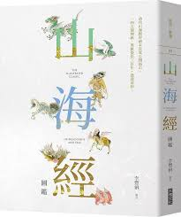
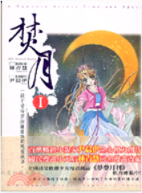
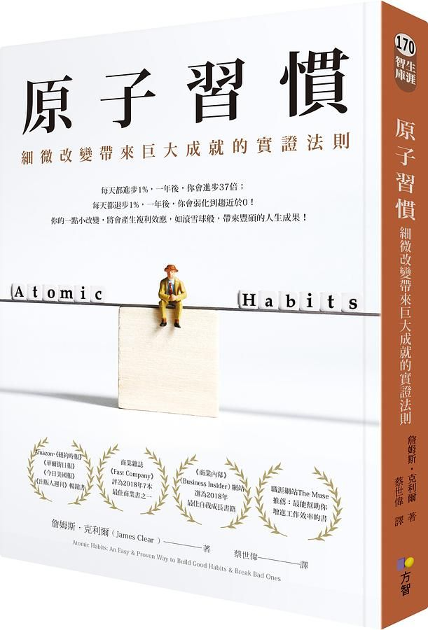

AI推薦適合您的新到館書籍。
 555
555
我的個人書房
HI ! 王小明您好，A111222233歡迎來到您的專屬書房
檢視閱讀權限

推薦對象：文學愛好者 / 藝術學生與愛好者 / 青少年及大學生
《山海經圖鑑》將古籍《山海經》以圖鑑形式呈現，透過李豐楙和何敬堯的專文導讀，讓讀者能夠在欣賞到清代彩繪本的精緻插圖之餘，更深入了解這充滿妖異神祇的古代神話世界。本書是國家圖書館珍藏的清代彩繪本的完美再現，帶領讀者探索神秘文化的光影和奇幻氛圍。對於熱愛文學、藝術以及對古代中國神話有濃厚興趣的讀者來說，這是一本不可多得的文化寶典。
更多資訊

推薦對象：文學愛好者 / 青少年 / 歷史愛好者
《焚月.
1》這本書帶領讀者進入一個充滿情感糾葛與超越時空的愛戀世界。故事中的核心角色段程楓、月書嬋與易向函的三角戀情從前世延續到今生，充滿宿命與交織的情感。書中的愛情是甜美卻又充滿悲劇色彩，展現了作者對於純真愛情的獨特詮釋。其風格結合了浪漫、懸疑以及歷史穿越元素，曲折的情節和生動的角色塑造讓這部作品具有豐富的情感與想像空間。關鍵詞有純愛、時空穿越、宿命、糾葛、悲歡離合。

推薦對象：求職或轉職者 / 上班族 / 教育工作者
《原子習慣》為全球熱賣暢銷書，由詹姆斯‧克利爾所著，提供了一個關於如何建立良好習慣並打破不良習慣的深入剖析，其影響力橫跨企業界、運動界及教育界。本書集實證研究與作者的親身經驗於一身，並精心設計了易於理解與實行的行為改變四法則。受到來自不同領域專家的高度評價，如理財與勵志作家艾爾文、教師社群創辦人溫美玉、網路知識分子艾蜜莉等多位知名人士激情推薦，是每一個追求個人成長和專業效率的讀者必讀之作。
推薦對象：科技愛好者 / 歷史愛好者 / 哲學愛好者
《三體》是劉慈欣的科幻代表作，不僅深受讀者喜愛，更是於2015年贏得雨果獎長篇科幻小說獎，標誌著中文科幻文學的世界性成就。小說橫跨現代中國歷史與遠大的宇宙舞台，講述地球與三體星系間的文明交流。獨特且引人入勝的故事情節，將讀者帶進一個充滿哲思與科學幻想的世界。本書推薦者包括哈佛大學的王德威教授，中國著名科幻作家韓松，以及眾多科幻文學愛好者。無論對科幻小說有興趣的讀者，還是對廣闊宇宙充滿好奇的探索者，都不容錯過《三體》這部作品。
推薦對象：小學生 / 教育工作者 / 父母
新一代故事大王凱叔的作品，《口袋神探》結合了燒腦的推理與科學原理，讓兒童在閱讀趣味故事的同時，學習科學知識與推理技巧。此系列書籍專為小學生設計，圖文結合，刺激孩子們的想像力與邏輯思維。凱叔利用精彩的案例，引領孩子們一步步揭開謎團，培養思考與解決問題的能力。